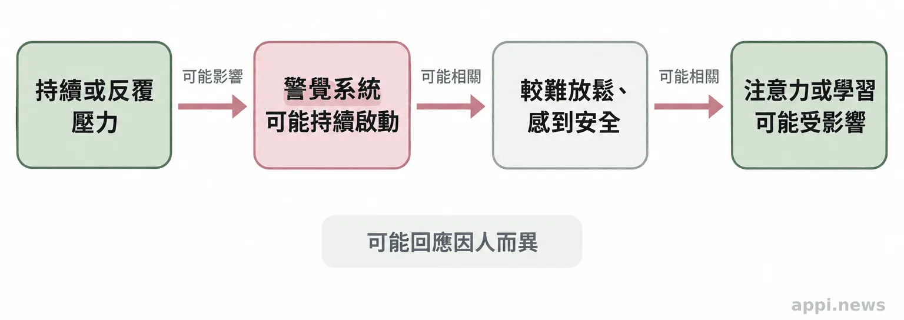
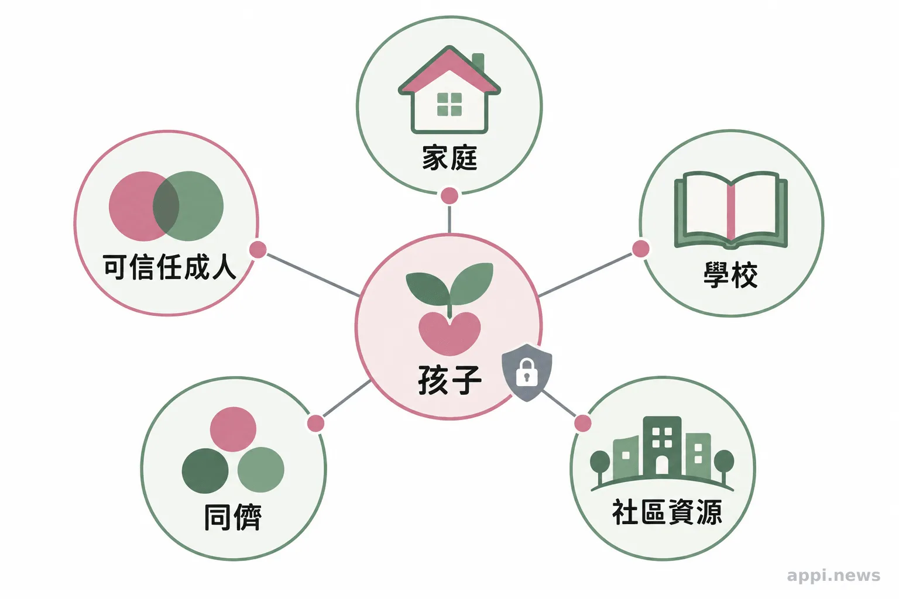

孩子受過傷，身邊的大人能做什麼？認識ACEs與安全支持
童年逆境與成年健康風險有群體關聯，卻不能預言單一孩子的未來。家長、教師與社區成人可以從安全、穩定的關係開始，並在有疑慮時使用正式求助管道。
孩子在家裡、學校或社區遇到長期壓力，可能變得沉默、容易受驚，也可能出現睡眠、專注或情緒上的變化。這些表現各有原因，不能單憑一個行為就判定孩子遭遇了什麼。大人能先做的，是留意安全、保持關係穩定，並在需要時協助連結專業資源。
一、ACEs整理的是群體經驗，不是孩子的命運
**ACEs是研究童年逆境經驗的分類框架，可協助理解群體健康風險，不能用來診斷或預測單一孩子。**孩子經歷的事情、持續時間、生活環境和可得到的支持都不相同。
ACEs是 Adverse Childhood Experiences 的縮寫。研究所說的逆境包括受虐、忽視、目睹家庭或社區暴力，也可能涵蓋家庭成員物質使用或心理健康問題，以及居住不穩等影響安全感的處境。分類是研究方法，並非完整清單；分數相同，也不代表經驗內容與影響相同。[1]
常被引用的 Felitti 等人研究，從美國醫療照護體系招募完成健康評估的成人。研究團隊寄出 13,494 份問卷，9,508 名成人回覆並納入分析，回覆率為 70.5%。研究觀察到，回報較多類別童年逆境的群體，在若干成年健康風險上也較高。[2] 這項研究呈現群體關聯，不能證明某段童年經驗必然造成某種疾病，更不能拿美國樣本替台灣孩子打分數。
ACEs量表沒有完整記錄孩子獲得的照顧與保護條件，分數不能回答孩子此刻是否安全，也不該成為貼標籤的工具。理解孩子，仍要回到他的生活與需要。
二、行為變化值得關心，不能當成診斷
**睡眠、專注、情緒或人際變化值得成人關心，但單一表現不足以判斷創傷。**先了解孩子是否安全、變化何時出現，再視需要邀請適當專業人員一起評估。
持續或反覆的壓力可能牽動身體的警覺反應，讓部分孩子較難放鬆、集中注意力或感到安全。CDC整理的研究指出，長期壓力可能與注意力、決策及學習發展相關；但這些是研究中的發展關聯，不代表每個孩子都會出現相同反應。[1]
腦部影像研究不能當成個別孩子的檢查結果；研究樣本與測量方式不同，群體平均差異不能直接套用在單一孩子身上。若孩子突然退縮、容易受驚或學習改變，可以記下時間與情境，並留意生活中其他變化。
孕婦、兒童、慢性病患者及長期服藥者若有持續不適，可向醫療或心理專業人員求助；ACEs問卷不能取代評估或作為自行停藥的依據。對孩子先聽、確認安全，再與家長、學校或專業服務討論。

三、穩定的大人關係，讓支持有機會持續
**安全、穩定且有支持的關係與環境，能為孩子增加可依靠的條件。**家長、教師、志工與社區成人不必追問全部經過，持續守約、尊重步調並協助找到資源，就是實際支持。
支持可以從日常開始：清楚說明安排，孩子不想立刻回答時給他時間；遇到困難時，陪他找到可信任的協助窗口。穩定、可預期的互動，讓孩子知道求助時有人回應。
CDC將安全、穩定且具支持性的關係與環境列為預防童年逆境、支持孩子發展的重要條件。[3] 家庭、學校和社區也要留意成人是否有支持、孩子能否安全表達、服務能否接續。協會與社區參與時，應尊重家庭處境、守護隱私、連結適切資源，不由志工調查或判定個案。

四、創傷知情照顧從安全、信任與選擇開始
**創傷知情照顧是理解創傷可能帶來的影響，並調整互動與服務的方式，不等同心理治療。**大人可以先維護安全、清楚說明、尊重選擇，避免責怪或要求孩子反覆描述細節。[4]
美國兒科學會介紹的創傷知情照顧重視安全、信任、合作與選擇。成人可說明詢問原因及資訊會交給誰，也讓孩子選擇談話地點或陪伴者。若孩子說出令人擔心的事，可回應：「謝謝你告訴我」「這不是你的錯」，並說明會找能保護他的人一起處理。
保護孩子不代表由身邊的大人自行查案。不要逼問細節、責怪孩子、承諾絕對保密，也不要把個案資訊放上社群或轉傳群組。兒童及少年福利與權益保障法第69條對足以識別兒少身分的資訊設有保護規定；分享經歷或尋求協助時，應避免姓名、照片、學校、住處等可辨識線索。[5]
若擔心孩子正遭受傷害，可以先確認眼前是否有立即危險，記下自己親自觀察到的情況與時間，不自行追查或散播身分資訊，並撥打衛福部113保護專線諮詢或通報；若有立即危險，請撥110。一般民眾不必先查明全部事實，才可以求助。[6][7]
「安全、穩定且具支持性的關係與環境」是預防童年逆境、支持孩子發展的重要條件。—美國疾病管制與預防中心（CDC）[3]
- ACEs呈現群體研究中的逆境類別，不能診斷或預言個人未來。
- 行為改變需要理解與評估，不宜只憑單一表現替孩子貼標籤。
- 成人可以從穩定陪伴、守護隱私、連結可信任資源開始；有安全疑慮時，使用113或110求助。
常見問題
**先確認安全，保持穩定、尊重的關係，並在需要時連結正式資源。**以下整理家長、教師與社區成人常見的疑問。
Q1：有ACEs經驗的人長大後一定會生病嗎？
不一定。研究呈現的是群體風險關聯，不能預測某個人的健康結果；生活支持和其他條件也會影響發展。
Q2：ACEs分數可以診斷孩子受過創傷嗎？
不可以。它是研究或風險辨識框架，不能取代專業評估，也沒有完整呈現每個孩子的經驗和支持。
Q3：孩子不願意說細節，大人還能怎麼幫忙？
可以先表達願意陪伴、確認孩子當下是否安全，並讓他知道需要時能再找你；不要逼迫重述或自行調查。
Q4：創傷知情照顧就是心理治療嗎？
不是。它是成人與服務系統理解創傷、維護安全和調整互動的取向；孩子持續受困擾時，可由合格專業人員評估是否需要治療。
Q5：懷疑孩子正遭受傷害時，該找誰？
可撥113保護專線諮詢或通報；若有立即危險，撥110。記下親自觀察到的情況即可，不必先自行查證或公開孩子身分。
今天可以先做的一件小事，是留意孩子身邊是否有一位能穩定回應他的成人。若你正擔心某個孩子的安全，請把個資留在必要的求助管道裡，透過113或110讓受訓人員接手。
台灣微光希望關懷協會理事長 林秀霞
參考文獻
- Centers for Disease Control and Prevention (2026). About Adverse Childhood Experiences. https://www.cdc.gov/aces/about/
- Felitti VJ, et al. (1998). Relationship of childhood abuse and household dysfunction to many of the leading causes of death in adults: The Adverse Childhood Experiences (ACE) Study. American Journal of Preventive Medicine, 14(4), 245–258. https://pubmed.ncbi.nlm.nih.gov/9635069/
- Centers for Disease Control and Prevention (2024). Preventing Adverse Childhood Experiences. https://www.cdc.gov/aces/prevention/index.html
- American Academy of Pediatrics. What Is Trauma-Informed Care? https://www.aap.org/en/patient-care/national-center-for-relational-health-and-trauma-informed-care/what-is-trauma-informed-care/
- 全國法規資料庫。兒童及少年福利與權益保障法，第69條。https://law.moj.gov.tw/LawClass/LawSingle.aspx?flno=69&pcode=D0050001
- 衛生福利部保護服務司。兒少保護。https://www.mohw.gov.tw/fp-190-233-1.html
- 內政部警政署。110報案。https://www.npa.gov.tw/ch/app/artwebsite/view?module=artwebsite&id=1048&serno=e3ad2889-4dee-41cf-aef8-9b9d26dc6950
本文同步刊於 appi.news。